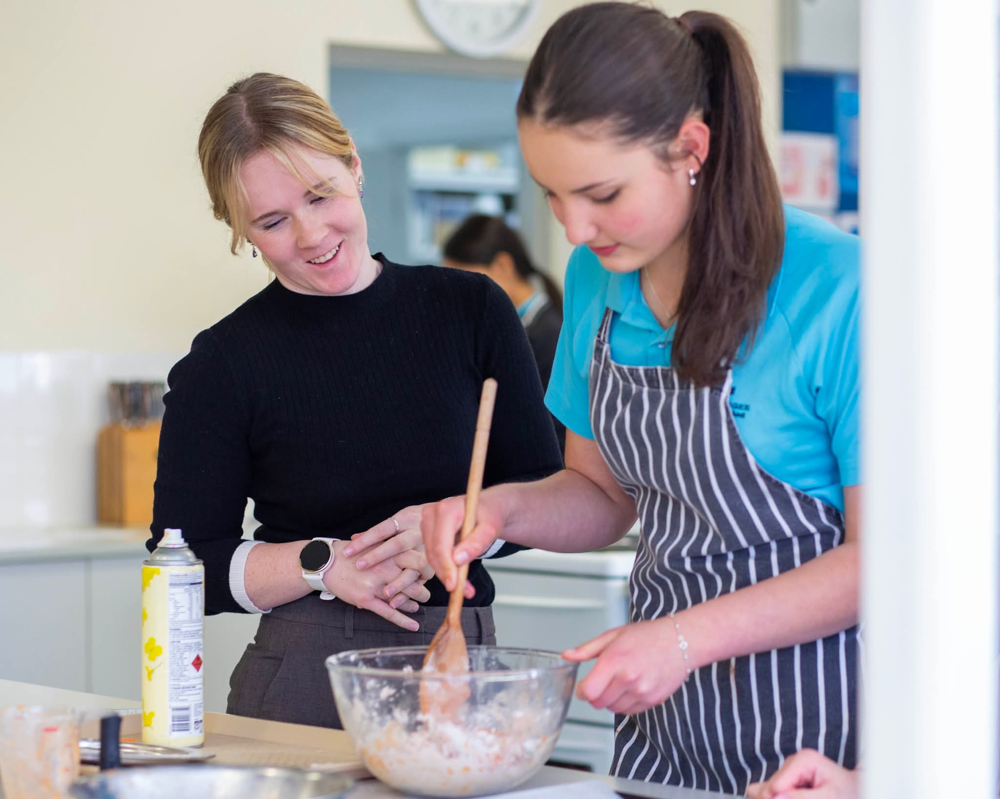

Get to know more about my experiences and beliefs as a teacher
Bachelor of Education (Secondary)/Bachelor of Arts (Design Innovations and Technologies)
In 2026, I will complete and obtain a bachelor's degree in Secondary Education, majoring in Industrial technology and design. This degree has equipped me with the skills to teach all TAS areas
Professional Experience
- 2023-Ongoing: SLSO role at Crestwood High School
- 2024: Practicum at The Hills Sports High School [15 days]
- 2024: Practicum at St John Paul's II Catholic College [15 days]
- 2025: Practicum at Quakers Hill High School [15 days]
Teaching Philosophy
All students bring unique identities, abilities, opinions, backgrounds, and attitudes to the classroom. I believe the classroom should be a safe environment where positive behaviours are modelled, supporting both academic and social growth. I endeavour to approach teaching with an open mind, modelling the skills and behaviours I wish to develop in my students, while remaining open to new learning opportunities.
My Projects
During the course of my degree, I have completed a range of projects suitable for students from year 7 to year 10. I have developed a number of skills, including the use of various woodwork and metalwork machinery, the development of joinery such as dominos, mitres and dovetails. I have additionally developed skills within food technology, textiles, computing technology and electromagnetic technologies.